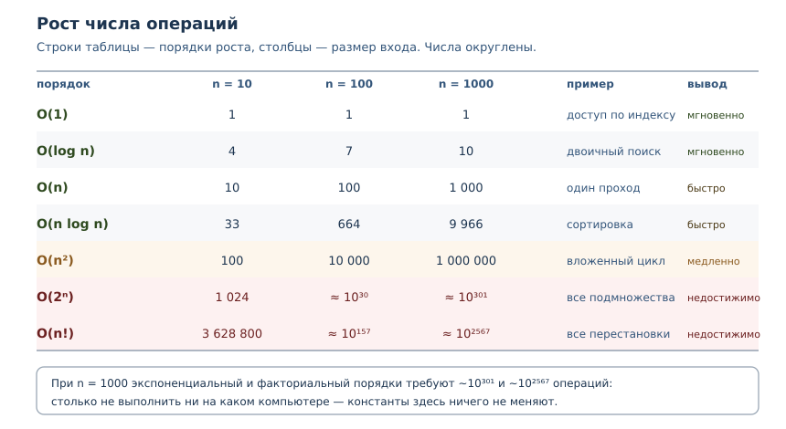
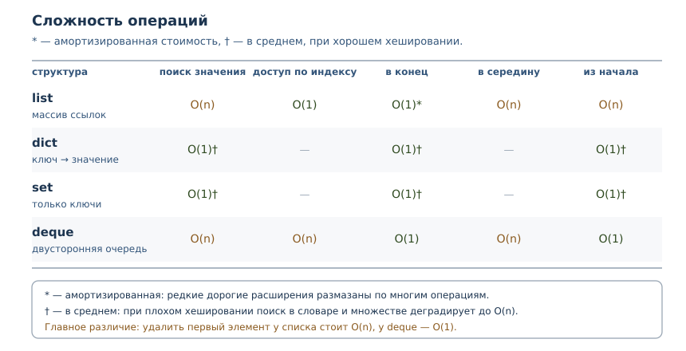

Алгоритмическое мышление: сложность и выбор структур
Big O, измерение роста, выбор структуры данных и цена преждевременной оптимизации.
В этой главе
Почти каждый спор о скорости кода заканчивается фразой «на моей машине это быстро». Фраза бессмысленна: она ничего не говорит о том, что будет при худшем входе, на слабом сервере или через год, когда данных станет в тысячу раз больше. Алгоритмическое мышление начинается с другого вопроса: как растёт работа программы при росте входа. В этой главе вы научитесь оценивать рост, измерять его и выбирать структуру данных под задачу, а не по привычке.
52.1 Что вы сможете после этой главы
К концу главы вы сможете делать следующее.
- записывать сложность алгоритма в O-нотации и объяснять, что она означает;
- отличать рост от константы и понимать, почему константа не спасает;
- измерять рост: сравнивать время на разных размерах входа;
- знать сложность операций у
list,dict,setиdeque; - объяснять амортизированную стоимость и не путать её со «средней»;
- выбирать структуру по требованиям задачи и не оптимизировать раньше времени.
52.2 Почему «на моей машине быстро» — не аргумент
Замер на одной машине отвечает на вопрос «сколько заняло сейчас». Для инженерного решения нужен ответ на вопрос «что будет, когда вход вырастет». Разница принципиальна: быстрый процессор уменьшает время в постоянное число раз, но не меняет форму кривой.
Покажем это на числах. Пусть один алгоритм делает 100n операций, а другой —
n * n. Константа 100 выглядит устрашающе, но при росте n она перестаёт
иметь значение.
def linear_steps(n):
return 100 * n
def quadratic_steps(n):
return n * n
print(f"{'n':>6} {'100n':>10} {'n*n':>12} {'линейный дешевле':>18}")
for n in (10, 50, 100, 500, 1000):
linear = linear_steps(n)
quadratic = quadratic_steps(n)
print(f"{n:>6} {linear:>10} {quadratic:>12} {str(linear < quadratic):>18}")
n 100n n*n линейный дешевле
10 1000 100 False
50 5000 2500 False
100 10000 10000 False
500 50000 250000 True
1000 100000 1000000 True
До n = 100 квадратичный алгоритм выигрывал, потому что у него меньше
константа. После точки пересечения линейный уходит вперёд и больше не
проигрывает. Вывод: константы решают на малых данных, рост — на больших.
Инженер обязан знать, в каком режиме живёт его задача.
52.3 O-нотация
O-нотация (Big O) — асимптотическая оценка роста времени или памяти
алгоритма при увеличении размера входа. Запись O(n) читается как «растёт не
быстрее, чем пропорционально n»; O(n ** 2) — «не быстрее, чем квадрат».
Три правила, которые избавляют от путаницы.
- Отбрасываем константы.
3n + 7— этоO(n): при большихnмножитель и слагаемое не влияют на форму роста. - Оставляем старшее слагаемое.
n ** 2 + n— этоO(n ** 2): квадрат растёт быстрее линейной части. - Указываем, о каком случае речь. Лучший, худший и типичный случаи могут
отличаться. Для поиска в списке лучший случай —
O(1)(элемент первый), худший —O(n)(элемента нет). Обычно оценивают худший или типичный.
Временная сложность — как растёт число операций алгоритма с ростом входа.
Пространственная сложность — как растёт объём дополнительной памяти.
Время и память оценивают отдельно: алгоритм может быть быстрым, но требовать
памяти O(n).
Разберём разницу случаев на линейном поиске.
def find_index(items, target):
checks = 0
for index, item in enumerate(items):
checks += 1
if item == target:
return index, checks
return -1, checks
data = list(range(1000))
print("в начале:", find_index(data, 0))
print("в конце:", find_index(data, 999))
print("нет такого:", find_index(data, -1))
в начале: (0, 1)
в конце: (999, 1000)
нет такого: (-1, 1000)
Один и тот же алгоритм сделал одну проверку и тысячу — в зависимости от
данных. Говоря «поиск в списке — O(n)», мы имеем в виду худший случай.
Углубление: O — это оценка сверху
Строго говоря, O обозначает верхнюю границу: «работает за O(n ** 2)»
верно и для линейного алгоритма. В инженерии O используют как «порядок
роста», указывая самую тесную известную границу; для выбора структуры данных
этого достаточно.
52.4 Порядки роста
Семь порядков покрывают почти весь практический код. Для каждого важны интуитивный пример и поведение при росте.
| Порядок | Что означает | Пример в Python |
|---|---|---|
O(1) |
работа не зависит от входа | доступ по индексу, поиск в словаре |
O(log n) |
каждый шаг сокращает вход | двоичный поиск, bisect |
O(n) |
один проход по данным | sum, поиск в списке |
O(n log n) |
почти линейно | sorted, сортировка слиянием |
O(n ** 2) |
все пары элементов | вложенный цикл |
O(2 ** n) |
все подмножества | перебор подмножеств |
O(n!) |
все перестановки | полный перебор маршрутов |
Таблица роста показывает, почему порядок важнее константы.
import math
def format_ops(value):
if value < 10 ** 7:
return f"{value:,}".replace(",", " ")
return f"~10^{len(str(value)) - 1}"
orders = [
("O(1)", lambda n: 1),
("O(log n)", lambda n: n.bit_length()),
("O(n)", lambda n: n),
("O(n log n)", lambda n: round(n * math.log2(n))),
("O(n^2)", lambda n: n * n),
("O(2^n)", lambda n: 2 ** n),
("O(n!)", lambda n: math.factorial(n)),
]
print(f"{'порядок':10} {'n=10':>10} {'n=100':>10} {'n=1000':>10}")
for label, fn in orders:
cells = " ".join(f"{format_ops(fn(n)):>10}" for n in (10, 100, 1000))
print(f"{label:10} {cells}")
порядок n=10 n=100 n=1000
O(1) 1 1 1
O(log n) 4 7 10
O(n) 10 100 1 000
O(n log n) 33 664 9 966
O(n^2) 100 10 000 1 000 000
O(2^n) 1 024 ~10^30 ~10^301
O(n!) 3 628 800 ~10^157 ~10^2567
Читать таблицу нужно по строкам: переход от n=10 к n=100 для O(n)
увеличивает работу в 10 раз, для O(n ** 2) — в 100. Для O(2 ** n) работа
превращается в 10^30, а это больше, чем число операций, которое компьютер
успеет сделать за время жизни Вселенной. Никакая оптимизация констант такого
не компенсирует.

Практическая граница: O(n log n) работает до миллионов элементов,
O(n ** 2) терпим до десятков тысяч, O(2 ** n) — до двадцати-тридцати.
Смена порядка — главный рычаг производительности, а не микротюнинг.
52.5 Как измерять рост
Сложность оценивают двумя способами: аналитически (посчитать операции в коде) и экспериментально (замерить на нескольких размерах входа). Второй способ опаснее: по одному замеру порядок не виден. Правило — мерить на нескольких размерах и сравнивать отношения.
timeit показывает, как меняется время при удвоении входа. У линейного
алгоритма время удваивается, у квадратичного — учетверяется, у константного —
не меняется. Числа на вашей машине будут другими; важны отношения.
$ python3 -m timeit -s "data = list(range(1000))" "999 in data"
50000 loops, best of 5: 4.35 usec per loop
$ python3 -m timeit -s "data = list(range(2000))" "1999 in data"
50000 loops, best of 5: 8.09 usec per loop
$ python3 -m timeit -s "data = set(range(1000))" "999 in data"
10000000 loops, best of 5: 28.6 nsec per loop
$ python3 -m timeit -s "data = set(range(2000))" "1999 in data"
10000000 loops, best of 5: 28.7 nsec per loop
Список при удвоении замедлился примерно вдвое — линейный рост. Множество осталось на месте — константа. Это и есть экспериментальное определение порядка: не абсолютное время, а зависимость от размера.
Оценить функцию по коду можно без запуска. Достаточно ответить на пять
вопросов: сколько в ней вложенных циклов по одним и тем же данным; есть ли
внутри цикла поиск по списку или строке; есть ли сортировка; создаются ли
копии данных на каждом шаге; какова глубина рекурсии. Каждое «да» повышает
порядок, и обычно этого достаточно, чтобы увидеть разницу между O(n) и
O(n ** 2) ещё до профилирования.
cProfile отвечает на другой вопрос: какие функции съели время. Он не
показывает внутренности одной функции, поэтому для циклов его дополняют
замерами на разных n.
$ python3 -m cProfile -s tottime bench_demo.py
2004 function calls in 0.011 seconds
Ordered by: internal time
ncalls tottime percall cumtime percall filename:lineno(function)
1000 0.010 0.000 0.010 0.000 bench_demo.py:3(expensive_check)
1 0.000 0.000 0.011 0.011 bench_demo.py:9(run_benchmark)
1000 0.000 0.000 0.000 0.000 {method 'append' of 'list' objects}
Здесь тысяча вызовов expensive_check дала почти всё время профиля: рост
времени определяется количеством вызовов, а не одной «медленной строкой».
Профиль и замеры на разных n дополняют друг друга: первый находит участок,
второй — его порядок роста.
Для грубой проверки в коде есть perf_counter. Печатать его значение в
учебном примере нельзя: оно зависит от машины. Печатают только инвариант.
from time import perf_counter
def work(limit):
return sum(range(limit))
measurements = []
for _ in range(3):
start = perf_counter()
work(100_000)
measurements.append(perf_counter() - start)
print("измерений:", len(measurements))
print("все неотрицательны:", all(value >= 0 for value in measurements))
измерений: 3
все неотрицательны: True
52.6 Сложность встроенных структур
Выбор структуры — это выбор сложности операций. В Python четыре структуры закрывают почти все задачи, и у каждой свой профиль.

Проверим главное различие на счётчиках сравнений. Список при поиске просматривает элементы по одному, множество вычисляет хеш и обращается к корзине.
comparisons = 0
class Key:
def __init__(self, value):
self.value = value
def __hash__(self):
return hash(self.value)
def __eq__(self, other):
global comparisons
comparisons += 1
return isinstance(other, Key) and self.value == other.value
target = Key(999)
as_list = [Key(number) for number in range(1000)]
as_set = set(as_list)
comparisons = 0
print("в списке:", target in as_list, "сравнений:", comparisons)
comparisons = 0
print("в множестве:", target in as_set, "сравнений:", comparisons)
в списке: True сравнений: 1000
в множестве: True сравнений: 1
Тысяча сравнений против одного — это и есть разница между O(n) и O(1) в
среднем. Обратите внимание на оговорку «в среднем»: у множества и словаря
поиск зависит от хеширования. Если все ключи попадают в одну корзину, поиск
вырождается в линейный. Для встроенных типов это редкость, для своих классов
с плохим __hash__ — закономерность.
Углубление: O(1) не всегда быстрее
Запись O(1) говорит о числе сравнений, а не об абсолютном времени. У
словаря и множества выше накладные расходы: нужно вычислить хеш, найти
корзину, проверить коллизии. Поэтому на пяти элементах список может оказаться
быстрее словаря, хотя формально проигрывает по порядку. Для строк хеш
вычисляется при первом обращении и кэшируется в объекте — это деталь CPython,
благодаря которой повторные поиски по одному ключу дешевле.
Отсюда практическое правило: сравнивать варианты нужно на том размере данных, который будет в работе. Порядок роста подсказывает, куда смотреть, а замер показывает, что происходит на самом деле.
Амортизированная сложность
Амортизированная сложность — средняя стоимость операции с учётом редких
дорогих перестроек, например расширения списка. Когда список заполнен,
append выделяет больший массив и копирует в него элементы. Одна такая
операция стоит O(n), но происходит редко, поэтому в среднем на один
append приходится постоянная работа.
Посчитаем копирования для модели с удвоением ёмкости.
def simulated_appends(count):
size = 0
capacity = 1
copies = 0
for _ in range(count):
if size == capacity:
copies += size
capacity *= 2
size += 1
return copies
for n in (100, 1000, 10000):
copies = simulated_appends(n)
print(f"n={n}: копирований {copies}, отношение {copies / n:.2f}")
n=100: копирований 127, отношение 1.27
n=1000: копирований 1023, отношение 1.02
n=10000: копирований 16383, отношение 1.64
Отношение всегда меньше двух: сумма 1 + 2 + 4 + ... + n меньше 2n.
Значит, на n добавлений приходится O(n) копирований, то есть в
среднем O(1) на операцию. Это и есть амортизированная оценка: не «обычно
быстро», а «суммарно дёшево».
Амортизированную оценку нельзя читать как «каждая операция быстрая»: один
конкретный append может быть дорогим. Для систем реального времени это
важно, для большинства прикладных задач — нет.
52.7 Выбор структуры под задачу
Выбор алгоритма и структуры — сопоставление требований задачи (доступ, вставка, поиск, порядок, память) со сложностью операций. Начинают всегда с требований, а не с «что быстрее».
| Требование | Структура | Почему |
|---|---|---|
| доступ по позиции, порядок важен | list |
O(1) по индексу |
| проверка «есть ли элемент» | set |
O(1) в среднем |
| связь «ключ → значение» | dict |
O(1) в среднем |
| очередь с двух концов | deque |
O(1) на обоих концах |
| частые вставки в середину | list или связный список |
у list O(n) |
| сортировка и двоичный поиск | list + bisect |
O(log n) после O(n log n) сортировки |
Хрестоматийная задача — поиск повторяющихся значений. Наивная версия хранит
уже встреченные элементы в списке и для каждого нового просматривает его
целиком: O(n ** 2). Версия с множеством делает один проход: O(n).
def unique_naive(items):
operations = 0
seen = []
for item in items:
found = False
for previous in seen:
operations += 1
if previous == item:
found = True
break
if not found:
seen.append(item)
return len(seen), operations
def unique_set(items):
operations = 0
seen = set()
for item in items:
operations += 1
seen.add(item)
return len(seen), operations
data = [number % 500 for number in range(1000)]
print("наивно:", unique_naive(data))
print("множество:", unique_set(data))
наивно: (500, 250000)
множество: (500, 1000)
Обе версии нашли 500 уникальных значений, но наивная сделала 250 000
сравнений, а версия с множеством — 1000 добавлений. При удвоении n первая
учетверит работу, вторая удвоит.
Другой пример — подсчёт частот. Словарь даёт O(1) на обновление счётчика,
поэтому подсчёт слов — один проход.
words = "раз два раз три два раз".split()
counts = {}
for word in words:
counts[word] = counts.get(word, 0) + 1
print(sorted(counts.items()))
print("всего слов:", len(words), "уникальных:", len(counts))
[('два', 2), ('раз', 3), ('три', 1)]
всего слов: 6 уникальных: 3
Если данные уже отсортированы, поиск стоит O(log n): двоичный поиск
отбрасывает половину диапазона на каждом шаге. Модуль bisect делает это без
ручного цикла.
import bisect
comparisons = 0
class Item:
def __init__(self, value):
self.value = value
def __lt__(self, other):
global comparisons
comparisons += 1
return self.value < other.value
def __eq__(self, other):
global comparisons
comparisons += 1
return isinstance(other, Item) and self.value == other.value
data = [Item(number * 2) for number in range(1000)]
target = Item(1998)
position = bisect.bisect_left(data, target)
print("позиция:", position)
print("сравнений:", comparisons)
позиция: 999
сравнений: 10
Десять сравнений на тысяче элементов — это O(log n): 2 ** 10 примерно
равно 1000. Ручной цикл сделал бы до тысячи сравнений. Обратите внимание:
bisect требует отсортированную последовательность; сортировка стоит
O(n log n) и окупается, только если поисков много.
52.8 Пространственная сложность
Пространственная сложность — как растёт объём дополнительной памяти при увеличении входа. Её оценивают отдельно от временной: иногда выгоднее потратить память, иногда — время.
Простейший пример: список квадратов против генератора. Список материализует все значения сразу, генератор выдаёт по одному и хранит только текущее.
import sys
def squares_list(limit):
return [number * number for number in range(limit)]
def squares_generator(limit):
return (number * number for number in range(limit))
materialized = squares_list(100_000)
lazy = squares_generator(100_000)
print("список из 100000 значений:", sys.getsizeof(materialized), "байт")
print("генератор:", sys.getsizeof(lazy), "байт")
print("список тяжелее генератора:", sys.getsizeof(materialized) > sys.getsizeof(lazy))
список из 100000 значений: 800984 байт
генератор: 208 байт
список тяжелее генератора: True
Память списка растёт как O(n), генератор занимает O(1). Числа конкретные
для CPython 3.14 и для другой версии будут другими, но соотношение остаётся:
материализация стоит памяти.
Другие типичные источники пространственной сложности:
- рекурсия — глубина стека
O(depth)(глава 8); - кэш — мемоизация из главы 40 обменивает память
O(n)на время; - копии данных —
sortedсоздаёт новый список,list.sortсортирует на месте; - промежуточные коллекции — цепочка из
map,filterиlistможет материализовать данные несколько раз.
52.9 Преждевременная оптимизация
Преждевременная оптимизация — оптимизация без измерения узкого места; она усложняет код, не улучшая реальную производительность. Дональд Кнут называл её корнем всех зол, и речь не о том, что оптимизировать не нужно, а о том, что нельзя оптимизировать то, что не измерено.
Важное различие, которое часто теряют: выбор структуры — не преждевременная
оптимизация. Заменить список на множество там, где нужен поиск, — это
решение о сложности, и оно принимается на этапе проектирования. Такое решение
почти ничего не стоит сейчас и дорого обходится при переделке позже. А
микрооптимизация вроде замены for на включение без замера — трата времени
на изменение, которое может не влиять ни на что.
Критерий «достаточно быстро» задают требования, а не ощущения: обработка запроса должна укладываться в 100 мс, отчёт за ночь — в 2 часа. Пока требование выполняется с запасом, оптимизировать нечего. Когда перестаёт — сначала профиль (глава 40), потом изменение, потом повторный замер.
Порядок действий:
- Сформулировать требование к скорости и способ его проверки.
- Выбрать структуру и алгоритм по требованиям задачи.
- Измерить на реальных данных; если требование нарушено — найти узкое место профилем и менять одну вещь, проверяя результат повторным замером.
52.10 Типичные ошибки
- Оценивать по одному замеру. Один размер входа не показывает порядок роста; нужны как минимум два-три размера.
- Путать константу с порядком. «У нас быстрый сервер» не спасает от
O(n ** 2)на миллионе записей. - Использовать список для проверки вхождения в цикле. Получается
O(n ** 2)там, где множество даётO(n). - Считать амортизированную оценку гарантией на каждую операцию. Один
appendможет быть дорогим. - Забывать про память. Материализация большого списка может уронить процесс раньше, чем закончится вычисление.
- Сортировать без нужды. Сортировка стоит
O(n log n); если нужен только поиск, возможно, хватит множества. - Оптимизировать холодный код. Функция, вызываемая один раз, не влияет на общую скорость.
- Менять всё сразу. Несколько изменений без повторного замера не позволяют понять, что помогло.
52.11 Упражнения
1. Оценка по коду
Для каждого фрагмента определите сложность по n:
for item in items:
print(item)
for first in items:
for second in items:
print(first, second)
for item in items:
if item in seen_set:
print(item)
while n > 1:
n = n // 2
print(items[0])
Объясните, какой случай (лучший, худший, типичный) вы оцениваете.
2. Константа или рост
Функция A делает 500n операций, функция B — n ** 2. При каком n
B перестаёт быть быстрее? Найдите точку пересечения аналитически, затем
проверьте таблицей через программу.
3. Порядок по замерам
Даны три замера времени для алгоритма: n=1000 — 2 мс, n=2000 — 8 мс,
n=4000 — 32 мс. Какой порядок роста у алгоритма? Какие замеры нужно
добавить, чтобы отличить O(n ** 2) от O(n ** 3)?
4. Поиск в списке и множестве
Дан список из 5000 чисел. Напишите две функции проверки вхождения и
посчитайте, сколько сравнений делает каждая (используйте класс со счётчиком в
__eq__). Объясните разницу и укажите, когда список всё же уместен.
5. Амортизированная стоимость
Смоделируйте append для списка с удвоением ёмкости: посчитайте копирования
при 10, 100 и 1000 добавлениях. Докажите формулой, что суммарная стоимость
меньше 2n.
6. Дубликаты
Напишите две функции поиска повторяющихся значений: с вложенным циклом и с множеством. Посчитайте операции для 2000 элементов и объясните, во сколько раз отличается работа при удвоении входа.
7. Выбор структуры
Для каждого требования выберите структуру и обоснуйте: (а) хранить словарь переводов; (б) проверять, входил ли пользователь сегодня; (в) держать очередь задач, из которой берут с начала и добавляют в конец; (г) хранить топ-10 результатов, которые обновляются.
8. Двоичный поиск
Реализуйте двоичный поиск вручную и через bisect. Посчитайте сравнения для
списка из 1024 элементов. Сколько сравнений нужно в худшем случае и почему
это O(log n)?
9. Память или время
Функция считает сумму квадратов чисел от 1 до n. Напишите три версии:
цикл с накоплением, список с sum, генератор. Сравните память через
sys.getsizeof и объясните, какую версию выбрать для n = 10 ** 8.
10. Мини-задача: частотный анализ
Дан список слов. Найдите слова, которые встречаются чаще одного раза, и
выведите их в порядке убывания частоты. Реализуйте через dict (сложность
O(n)), затем через сортировку пар. Объясните, какая часть решения даёт
O(n log n) и можно ли её избежать.
52.12 Проверка понимания
- Что означает запись
O(n log n)и почему константы в ней отброшены? - Чем отличаются лучший, худший и типичный случаи? Приведите пример, где они различаются.
- Почему «на моей машине быстро» не годится как аргумент в выборе алгоритма?
- Как по замерам на нескольких размерах определить порядок роста?
- Почему поиск в множестве в среднем
O(1), а в списке —O(n)? - Что такое амортизированная сложность и почему она не гарантирует каждую операцию?
- Когда материализация списка хуже генератора?
- Чем выбор структуры отличается от преждевременной оптимизации?
52.13 Связи
Глава продолжает разговор о производительности из главы 40: там были
профилирование и измерение, здесь — оценка роста и выбор структуры. Словари,
множества и deque разобраны в главах 16, 17 и 34; генераторы и ленивые
вычисления — в главе 21. Амортизированная стоимость опирается на устройство
списка, а мемоизация — на словарь.
Дальше — запахи кода и рефакторинг: понимание сложности помогает замечать места, которые деградируют при росте данных, и заменять их до того, как они станут проблемой.